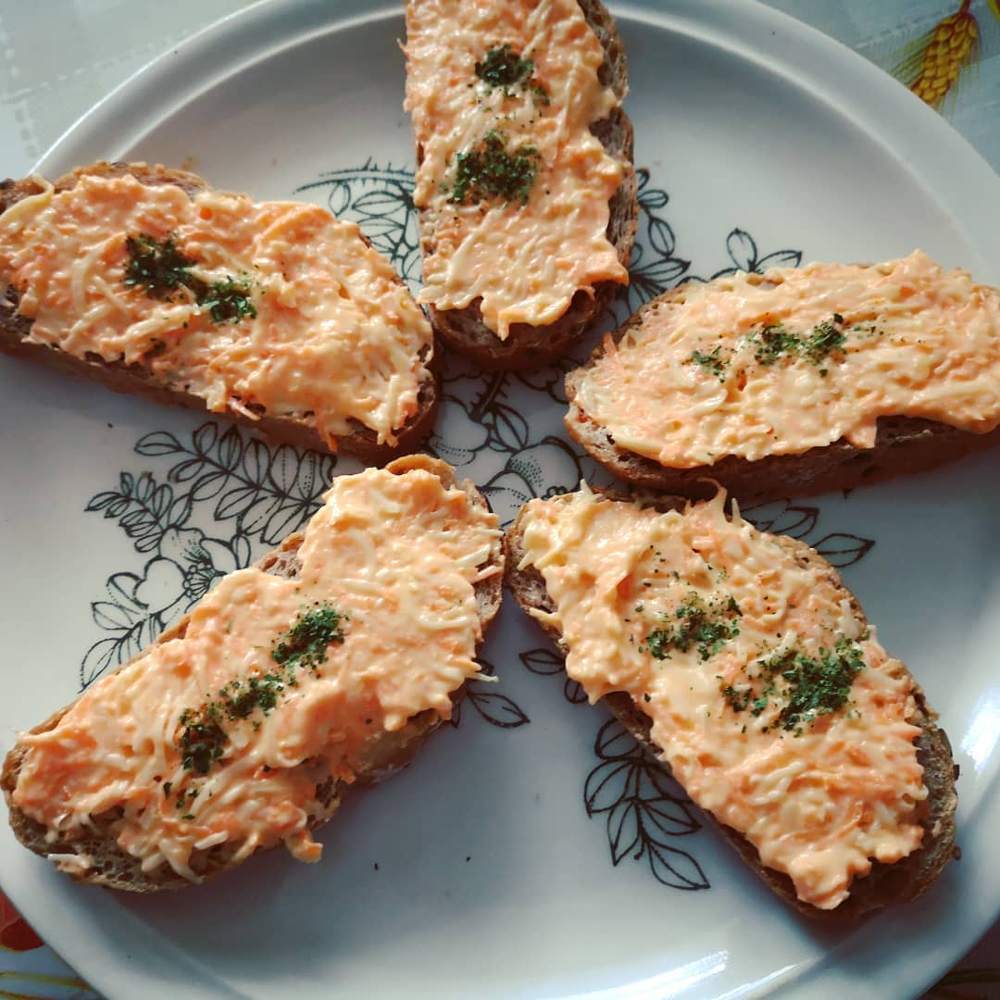

#syrovanatierka#mrkva#syr#cesnak#majoneza#cerstvepecivo#
Syrová nátierka ❤️
Suroviny: 150 g tvrdého syra, 2 mrkvy, 4 strúčiky cesnaku, 1 majonéza
Postup: Syr a surovú mrkvu postrúhame najemno. Cesnak pretlačíme a pridáme k mrkve a syru. Zľahka premiešame. Nakoniec vmiešame majonézu. Podávame natreté na čerstvom pečive.